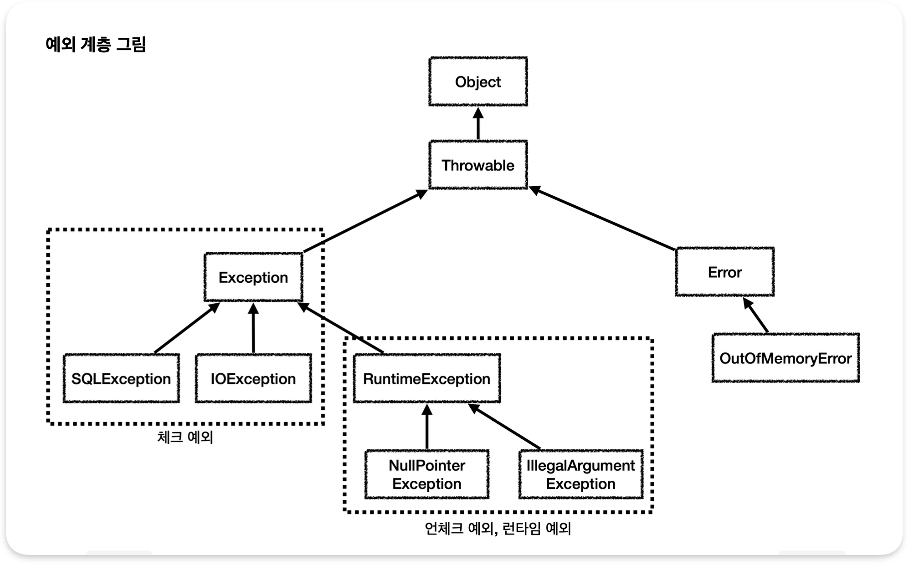
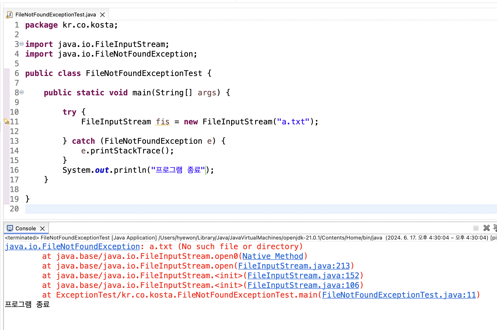
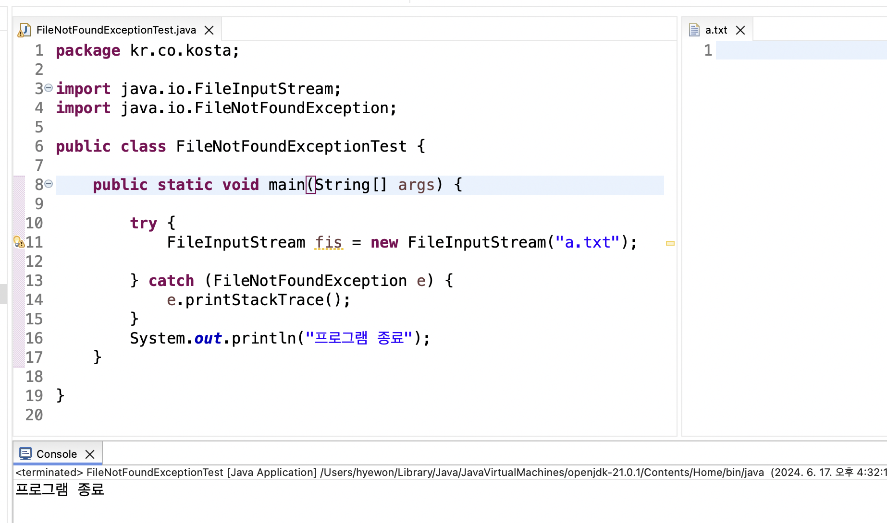

예외처리
오류 종류, 체크 예외, 언체크 예외(런타임 예외)
📌 오류 종류
- 컴파일 오류(compile error)
- 실행 오류(runtime error)
- bug
- 로그(log)분석을 통해 원인 파악 가능
📌 예외 계층 그림

📌 예외 처리하기
-
try-catch문
-
컴파일러에 의해 예외가 체크되는 경우
- 파일 입출력에서 발생하는 예외처리
a.txt 생성 전 예외처리 됨.

a.txt 생성 후

-
try ~ catch ~ finally 문
- 프로그램에서 사용한 리소스는 프로그램이 종료 되면 자동으로 해제
- 그러다 리소스 해제가 안되고 계속 수행되는 서비스의 경우 열기만 하고 닫지 않으면 문제가 발생함
- 시스템에서 허용하는 자원은 한계가 있기 때문이다.
- 그래서 리소스를 종료해야 한다.
- try{} 블럭이 수행되는 동안, finally{} 블럭은 항상 수행됨
- 각각의 리소스 해제를 finally 블록에서 해제하도록 구현함
try ~ catch ~ finally 문 예제
package kr.co.kosta2; import java.io.FileInputStream; import java.io.FileNotFoundException; import java.io.IOException; public class ExceptionFinallyTest { public static void main(String[] args) { FileInputStream fis = null; try { fis = new FileInputStream("a1.txt"); } catch (FileNotFoundException e) { System.out.println(e); return; //e.printStackTrace(); } finally { if(fis != null) { try { fis.close(); // close() 호출 한 곳에서도 예외처리 해야함 } catch (IOException e) { // TODO Auto-generated catch block e.printStackTrace(); } } System.out.println("항상 수행됩니다"); } System.out.println("come here"); } }- return; 을 주석처리한다면?
-
try ~ with ~ resource문
- close() 메서드를 명시적으로 호출하지 않아도 try 불록내에서 열린 리소스를 자동으로 닫도(해제)록 해준다.
- 리소스를 사용하는 경우 close()를 사용하지 않아도 자동으로 해제 되도록 함
-
⭐️ 해당 리소스가
AutoCloseable인터페이스를 구현해야 함 -
리소스를 try() 내부에서 선언해야 함
-
close()를 명시적으로 호출하지 않아도 try{} 블록에서 열린 리소스는 정상적인 경우나 예외가 발생한 경우 모두 자동으로 해제됨
AutoCloseable인터페이스 구현 필요
-
자바 7 부터 제공
try ~ with ~ resource문 예제
package kr.co.kosta3; public class MyAutoClass implements AutoCloseable { @Override public void close() throws Exception { System.out.println("리소스가 close() 되었습니다."); } }package kr.co.kosta3; public class AutoCloseTest { public static void main(String[] args) { try (MyAutoClass obj = new MyAutoClass()) { // throw new Exception(); // throw : 강제로 예외 발생 } catch (Exception e) { System.out.println("예외 부분입니다."); } } }- throw new Exception(); 코드 추가
- throw : 강제로 예외 발생
- 이렇게 작성 해도 됨
- close() 메서드를 명시적으로 호출하지 않아도 try 불록내에서 열린 리소스를 자동으로 닫도(해제)록 해준다.
📌 예외 처리 미루기 - throws
- throws 사용: 예외처리 미루기 위한 방법
- throws를 이용하면 예외가 발생할 수 있는 부분을 사용하는 문장에서 예외를 처리할 수 있음
- 하나의 try{} 블록에서 예외가 여러 개 발생하는 경우
- 여러개의 예외가 발생하는 경우 예외를 묶어서 하나의 방법으로 처리할 수 있음
- 각각의 예외를 따로 처리할 수도 있음.
- Exception 클래스를 활용하여 default 처리를 할 때 Exception 블록은 맨 마지막에 위치해야 함
예외 처리 미루기 예제1 - 다수 예외를 한 문장으로 처리
package kr.co.kosta4;
import java.io.FileInputStream;
import java.io.FileNotFoundException;
public class ThrowsTest {
public Class loadClass(String fileName, String className)
throws FileNotFoundException, ClassNotFoundException { // 두 예외를 메서드가 호출 될 때마다 처리하도록 미룸
FileInputStream fis = new FileInputStream(fileName); // FileNotFoundException 발생 가능
Class c = Class.forName(className); // ClassNotFoundException 발생 가능
return c;
}
public static void main(String[] args) {
ThrowsTest test = new ThrowsTest();
try {
test.loadClass("a1.txt", "java.lang.String"); // 메서드 호출 할 때 예외 처리됨
} catch (FileNotFoundException | ClassNotFoundException e) { // 여러 예외를 한 문장으로 처리함.
// TODO Auto-generated catch block
//e.printStackTrace();
System.out.println(e);
}
}
}
예외 처리 미루기 예제2 - 다수 예외를 catch문 사용하여 처리
package kr.co.kosta4;
import java.io.FileInputStream;
import java.io.FileNotFoundException;
public class ThrowsTest2 {
public Class loadClass(String fileName, String className)
throws FileNotFoundException, ClassNotFoundException { // 두 예외를 메서드가 호출 될 때마다 처리하도록 미룸
FileInputStream fis = new FileInputStream(fileName); // FileNotFoundException 발생 가능
Class c = Class.forName(className); // ClassNotFoundException 발생 가능
return c;
}
public static void main(String[] args) {
ThrowsTest2 test = new ThrowsTest2();
try {
test.loadClass("a1.txt", "java.lang.String"); // 여러 catch문 사용
} catch (FileNotFoundException e) {
// TODO Auto-generated catch block
//e.printStackTrace();
System.out.println(e);
}catch (ClassNotFoundException e) {
// TODO: handle exception
e.printStackTrace();
} catch (Exception e) {
e.printStackTrace(); // Exception: 위 2개 catch 예외처리 외의 예외 상황 처리
}
}
}
📌 사용자 정의 예외
사용자 정의 예외 - ID 검증 예제
package kr.co.kosta5;
public class MakeIDException extends Exception {
public MakeIDException(String message) { // 생성자의 매개변수로 예외상황 메시지를 받음
super(message);
}
}
package kr.co.kosta5;
public class MakeIDExceptionTest {
private String userId;
public String getUserId() {
return userId;
}
public void setUserId(String userId) throws MakeIDException {
if (userId == null) {
throw new MakeIDException("ID는 null일 수 없다. "); // 강제 예외 시킴
} else if (userId.length() < 9 || userId.length() > 20) {
throw new MakeIDException("ID가 9자 이상 20자 이하로 작성해주세요. "); // 강제 예외 시킴
}
// 예외를 통과한다면 ID 설정
this.userId = userId;
}
public static void main(String[] args) {
MakeIDExceptionTest test = new MakeIDExceptionTest();
String userId = null;
try {
test.setUserId(userId);
} catch (MakeIDException e) {
//e.printStackTrace();
System.out.println(e.getMessage());
}
userId = "12345678";
try {
test.setUserId(userId);
} catch (MakeIDException e) {
//e.printStackTrace();
System.out.println(e.getMessage());
}
userId = "12345678910";
try {
test.setUserId(userId);
} catch (MakeIDException e) {
//e.printStackTrace();
System.out.println(e.getMessage());
}
}
}
사용자 정의 예외 - 점수 예제
package kr.co.kosta5;
class Student {
private String name;
private int score;
public Student(String name, int score) {
super();
this.name = name;
this.score = score;
}
public String getName() {
return name;
}
public int getScore() {
return score;
}
}
// 사용자 정의 점수 예외 클래스
class LowScoreException extends Exception {
public LowScoreException(String message) {
super(message);
}
}
public class MyScoreExceptionTest {
public static void main(String[] args) {
List<Student> students = new ArrayList<>();
students.add(new Student("hong", 70));
students.add(new Student("Lee", 90));
students.add(new Student("Shin", 50));
try {
for (Student student : students)
checkScore(student);
} catch (LowScoreException e) {
System.out.println(e.getMessage());
}
}
// 점수가 60점 미만민 경우 예외를 발생시키는 메서드
public static void checkScore(Student student) throws LowScoreException {
System.out.println("점수 확인 중 -- " + student.getName());
if (student.getScore() < 60) {
throw new LowScoreException("Failed -- " + student.getName() + " 점수가 낮음, " +student.getScore() + "점 받음 \n");
}
System.out.println("Passed -- " + student.getName() + " 만족스러운 " +student.getScore() + "점 받음 \n");
}
}